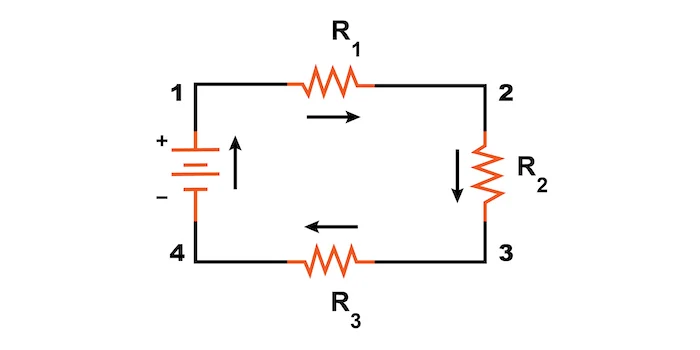
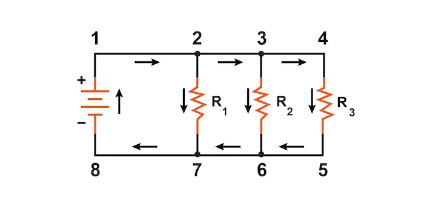
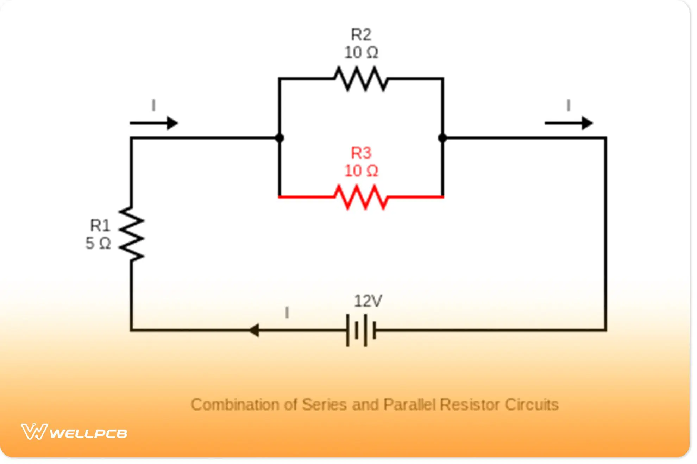

Ohm’s Law is one of the most useful tools in introductory electricity. It helps explain why some devices draw more current than others, why wires heat up, why batteries drain, and how engineers design circuits that are both functional and safe.
Students will use Ohm's Law and simple series or parallel relationships to analyze electric circuits.
Imagine two bulbs connected to identical batteries, but one bulb glows more brightly than the other. Something about the circuit is allowing more current to pass through one bulb than through the other. To understand that difference, physicists relate three quantities: voltage, current, and resistance.
Voltage provides energy per charge. Current tells how much charge flows each second. Resistance describes how strongly a material or component opposes that flow. Ohm’s Law connects these ideas with a simple equation that becomes one of the main tools for circuit analysis.
In this section, we move from general ideas about charge flow to the algebraic structure of circuits. Students begin to analyze what happens when voltage increases, when resistance changes, and when current is measured in different parts of a circuit.
In the early 1800s, Georg Simon Ohm studied how electrical current behaved in wires and circuits. Through careful experiments, he found a consistent mathematical relationship between voltage, current, and resistance.
At first, Ohm’s work was not widely accepted. Some scientists thought the relationship was too simple or did not apply broadly enough. Over time, however, experiments confirmed that his law was extremely useful for many electrical systems.
Ohm’s name is now attached both to the law itself and to the SI unit of resistance, the ohm $(\Omega)$. His work helped transform electricity from a collection of observations into a quantitative science that engineers could use.
Today, Ohm’s Law is taught in nearly every introductory electricity course because it gives students a practical, algebra-based entry point into circuit analysis.
Ohm’s Law connects the three main quantities used in simple circuit analysis: voltage, current, and resistance. It states that the voltage across a component equals the current through that component multiplied by its resistance.
$V$ = voltage $\left(\text{V}\right)$
$I$ = current $\left(\text{A}\right)$
$R$ = resistance $\left(\Omega\right)$
This relationship helps explain why current changes when voltage changes and why current decreases when resistance increases.
Resistance is the opposition to the flow of electric charge. A component with greater resistance makes it harder for current to move through the circuit.
Resistance unit:
$$1\,\Omega = 1\,\text{V/A}$$Materials and devices with low resistance allow charge to flow more easily. Materials with high resistance oppose charge flow more strongly.
Voltage provides the push that drives charge through a circuit. Current tells how much charge flows each second. Resistance opposes that flow. These three quantities are linked, so changing one often changes another.
A series circuit has only one path for charge to follow. Because there is only one path, the same current passes through every component in the circuit.

$R_T$ = total resistance in series
Adding more resistors in series increases total resistance. If the battery voltage stays the same, increasing total resistance reduces current.
A parallel circuit provides more than one path for current. Each branch is connected across the same two points in the circuit.

$R_T$ = total resistance in parallel
Adding branches in parallel decreases total resistance. Because the total resistance becomes smaller, the total current supplied by the source increases.
Equivalent resistance is the single resistance that could replace part or all of a circuit and behave the same way electrically. In simple circuit analysis, finding equivalent resistance is often the first step before using Ohm’s Law.
For a series circuit, equivalent resistance is found by adding resistors directly. For a parallel circuit, equivalent resistance is found using the reciprocal relationship for parallel branches.
A conductor is a material that allows electric charge to flow easily. Metals such as copper are common conductors because they have low resistance.
An insulator is a material that strongly resists charge flow. Rubber and plastic are common insulators and are often used to coat wires for safety.
Circuit diagrams help organize information about voltage sources, resistors, and current paths. They allow students to connect equations to a physical setup and make predictions about how a circuit will behave.

When analyzing a diagram, ask:
Not every circuit question requires a full calculation. Many can be answered by reasoning from Ohm’s Law and from series or parallel relationships.
Ohm’s Law
$$V = IR$$
$V$ = voltage $\left(\text{V}\right)$
$I$ = current $\left(\text{A}\right)$
$R$ = resistance $\left(\Omega\right)$
Current Form
$$I = \frac{V}{R}$$
$I$ = current $\left(\text{A}\right)$
$V$ = voltage $\left(\text{V}\right)$
$R$ = resistance $\left(\Omega\right)$
Resistance Form
$$R = \frac{V}{I}$$
$R$ = resistance $\left(\Omega\right)$
$V$ = voltage $\left(\text{V}\right)$
$I$ = current $\left(\text{A}\right)$
Series Resistance
$$R_T = R_1 + R_2 + R_3 + \dots$$$R_T$ = total resistance $\left(\Omega\right)$
Parallel Resistance
$$\frac{1}{R_T} = \frac{1}{R_1} + \frac{1}{R_2} + \frac{1}{R_3} + \dots$$$R_T$ = total resistance $\left(\Omega\right)$
Ohm Definition
$$1\,\Omega = 1\,\text{V/A}$$| Symbol | Meaning | SI Unit |
|---|---|---|
| $V$ | Voltage | volt (V) |
| $I$ | Current | ampere (A) |
| $R$ | Resistance | ohm (Ω) |
| Feature | Series Circuit | Parallel Circuit |
|---|---|---|
| Current | Same everywhere | Splits into branches |
| Voltage | Divided across components | Same across each branch |
| Resistance | Adds directly | Decreases overall |
| Failure | Whole circuit stops | Other branches still work |
Ohm’s Law is usually written as: $$V = IR$$
To solve for current, divide both sides by resistance:
$$I = \frac{V}{R}$$To solve for resistance, divide both sides by current:
$$R = \frac{V}{I}$$This algebra allows us to analyze circuits by choosing the correct form based on what is known and what must be found.
The relationship between voltage, current, and resistance: $V = IR$.
The opposition to current flow in a material or component.
The SI unit of resistance.
A circuit component designed to provide a specific resistance.
A symbolic drawing that represents the parts of a circuit and how they are connected.
A circuit in which charge has a single path to follow.
The single resistance that could replace part or all of a circuit while keeping the same electrical behavior.
Given → Find → Equation → Solve → Check Units
Diagram Tips
Unit Analysis Tips
This section pairs well with a simple resistor-lab investigation or a circuit simulation in which students vary voltage and resistance and observe the resulting current. A PhET circuit builder or an oPhysics-style visualization can help students see Ohm’s Law as a pattern in data rather than just a memorized equation.
1. Define resistance.
2. What is an ohm?
3. Define Ohm’s Law in words.
4. What is a series circuit?
5. What is a parallel circuit?
6. Define equivalent resistance.
7. What is a conductor?
8. What is an insulator?
9. Explain why increasing resistance decreases current when voltage remains constant.
10. Explain why current is the same everywhere in a series circuit.
11. Explain why voltage is the same across each branch in a parallel circuit.
12. Describe what happens to total resistance when more resistors are added in series.
13. Describe what happens to total resistance when more branches are added in parallel.
14. A resistor has a voltage of $20\,\text{V}$ and carries a current of $4.0\,\text{A}$. What is the resistance?
15. A $10\,\Omega$ resistor is connected to a $30\,\text{V}$ source. What current flows?
16. A circuit carries $3.0\,\text{A}$ with a resistance of $6\,\Omega$. What is the voltage?
17. Two resistors of $4\,\Omega$ and $8\,\Omega$ are connected in series to a $24\,\text{V}$ battery. What is the current?
18. Two resistors of $6\,\Omega$ and $3\,\Omega$ are connected in parallel to a $12\,\text{V}$ source. What is the total current?
19. A student adds another resistor in series and observes that the current decreases. Explain why this happens using Ohm’s Law.
20. A circuit has more branches added in parallel. Explain why the total current from the battery increases.
21. Design a simple circuit using a battery and two resistors that would produce a smaller current than a single-resistor circuit. Explain your reasoning.
22. A technician wants to reduce total resistance in a circuit without changing the battery. Describe how the circuit should be modified and justify your answer.
1. What best describes resistance?
2. Which unit measures resistance?
3. If resistance increases while voltage remains constant, what happens to current?
4. In a parallel circuit, what happens when another branch is added?
5. A $12\,\Omega$ resistor is connected to a $24\,\text{V}$ battery. What current flows?
6. Two resistors of $3\,\Omega$ and $6\,\Omega$ are connected in series to a $18\,\text{V}$ battery. What is the current in the circuit?
7. A student says, “Adding more resistors always increases current because there are more paths.” Explain why this is incorrect.
1. Opposition to current flow
2. Unit of resistance equal to volts per ampere
3. Voltage equals current times resistance
4. Circuit with one path for current
5. Circuit with multiple paths for current
6. Single resistance replacing a circuit
7. Material allowing charge flow easily
8. Material resisting charge flow
9. From $I = \frac{V}{R}$, increasing resistance reduces current
10. Only one path exists, so all charges pass through each component
11. Each branch connects across the same two points, so voltage is equal
12. Total resistance increases because resistors add
13. Total resistance decreases because more paths are available
14. $5.0\,\Omega$
15. $3.0\,\text{A}$
16. $18\,\text{V}$
17. $2.0\,\text{A}$
18. $6.0\,\text{A}$
19. Adding resistance increases $R$, so current decreases by Ohm’s Law
20. More parallel branches decrease total resistance, increasing current
21. Add resistors in series to increase resistance and reduce current
22. Add branches in parallel to decrease total resistance
1. B — Resistance is the opposition to current flow, not the flow itself or energy.
2. C — Resistance is measured in ohms (Ω), defined as volts per ampere.
3. B — From Ohm’s Law, $I = \frac{V}{R}$, increasing resistance decreases current when voltage stays constant.
4. B — Adding a branch in parallel creates more paths, lowering total resistance.
5.
$$I = \frac{V}{R} = \frac{24}{12} = 2.0\,\text{A}$$Answer: $\boxed{2.0\,\text{A}}$
6.
Step 1: Total resistance
$$R_T = 3 + 6 = 9\,\Omega$$Step 2: Current
$$I = \frac{18}{9} = 2.0\,\text{A}$$Answer: $\boxed{2.0\,\text{A}}$
7. The statement is incorrect because it mixes up series and parallel ideas.
Adding resistors in series increases total resistance, which reduces current.
Adding resistors in parallel creates more paths and decreases total resistance, which increases current.
So adding resistors does not always increase current — it depends on how they are connected.
Answer: $\boxed{6.0\,\Omega}$
Step 1: Find total resistance
$$R_T = 6 + 9 = 15\,\Omega$$Step 2: Find current
$$I = \frac{V}{R_T} = \frac{30}{15} = 2.0\,\text{A}$$Answer: $\boxed{2.0\,\text{A}}$
Answer: $\boxed{2.67\,\Omega}$
Step 1: Total resistance
$$R_T = 5 + 10 = 15\,\Omega$$Step 2: Current
$$I = \frac{30}{15} = 2.0\,\text{A}$$Answer: $\boxed{2.0\,\text{A}}$
Step 1: Equivalent resistance
$$\frac{1}{R_T} = \frac{1}{6} + \frac{1}{3} = \frac{1}{2}$$ $$R_T = 2.0\,\Omega$$Step 2: Total current
$$I = \frac{V}{R_T} = \frac{12}{2.0} = 6.0\,\text{A}$$Answer: $\boxed{6.0\,\text{A}}$